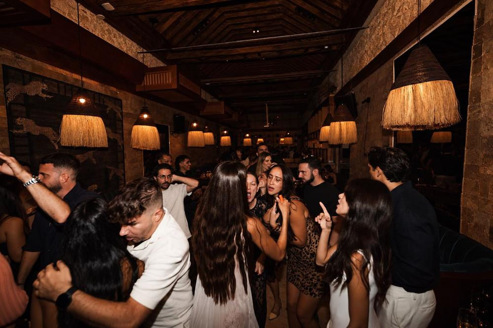

The sound of SLVJ: why Cartagena's club runs on Funktion-One
Music isn't just heard: it's felt in your chest. Why we chose Funktion-One for the club.
Leer en español →
A club can have the best music and the best crowd, but if the sound fails, the night falls flat. That's why, when the SLVJ room turns into a club, it plays on Funktion-One.
What is Funktion-One
Funktion-One is a British sound system maker that became a benchmark in electronic music and in the world's most demanding clubs. Its promise is clarity: bass you feel without being battered, and voices and instruments that stay distinct even at high volume.
How it feels at SLVJ
Thursday to Saturday, after dinner, the feast's lights go down and the room lights up. Stone, velvet, amber light and a sound built for dancing until 3 am without leaving with ringing ears.
Book a dinner table or a club table. We're at Calle Santa Teresa #32-41; check opening hours and read what a night at SLVJ looks like.